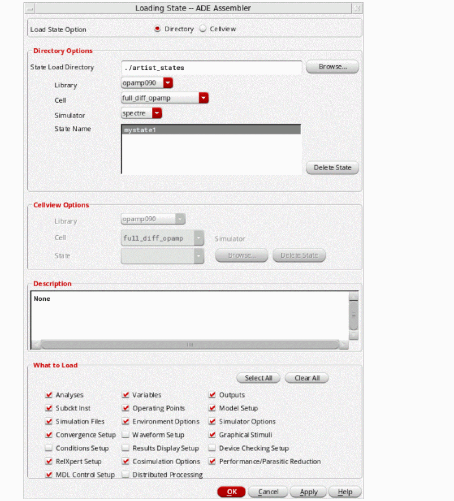
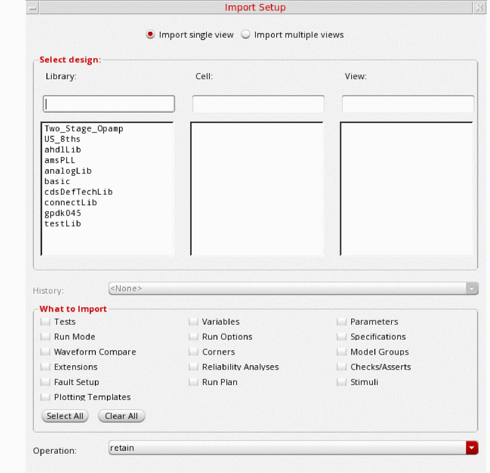

27
Migrating ADE L or ADE XL Cellviews to ADE Assembler
ADE Assembler provides support to import and reuse the setup from ADE L or ADE XL. The following sections provide details on how to migrate states or cellviews saved using these tools into ADE Assembler:
- Migrating an ADE L State to ADE Assembler
- Migrating an ADE XL Setup to ADE Assembler
- Reusing Menu Customization from ADE XL
Migrating an ADE L State to ADE Assembler
To migrate setup details from ADE L to ADE Assembler, save a state in ADE L, if not already available, and load it in ADE Assembler. You can do this in any of the following ways:
- Loading an ADE L State for a Test in ADE Assembler
- Migrating an ADE L State to ADE Assembler Using SKILL
Loading an ADE L State for a Test in ADE Assembler
To migrate an ADE L state to ADE Assembler, create a placeholder test in the maestro cellview in ADE Assembler and then, perform the following steps:
- In the Data View pane of the ADE Assembler window, expand the Tests tree to view the names of all the tests contained in it.
-
Right-click the test for which you need to migrate an ADE L state and select Load State.
The Loading State -- ADE Assembler form is displayed, as shown below.
 - Depending on how the state was saved in ADE L, select Directory or Cellview radio button for Load State Option.
- Select the details of the source directory or cellview state in the Directory Options or Cellview Options group box.
- In the What to Save group box, select the check boxes for the components you want to copy to the test in ADE Assembler.
- Click OK.
All the selected settings are copied to the test in ADE Assembler.
Also see: MTSremoveOldConfigSetupAfterMigration
Migrating an ADE L State to ADE Assembler Using SKILL
You can save an ADE L state as a cellview or a state file, and then migrate it to a maestro cellview using the
The following example code migrates an ADE L state from a cellview state, spectre_state1:
maeMigrateADELStateToMaestro("Two_Stage_Opamp" "OpAmp_AC_top" "spectre_state1" )
=> ("Two_Stage_Opamp" "OpAmp_AC_top" "maestro") ;; the function returns the library, cell, and view name of the new maestro view
In the above example, the default name maestro was used to create a new cellview. This cellview will be available in the Library Manager and you can open it in ADE Assembler using the Open With command in the pop-up menu.
The following example code migrates an ADE L state from a state file, AC_state1, saved in the ./libs/Two_Stage_Opamp/OpAmp/adexl/test_states/ directory:
maeMigrateADELStateToMaestro("Two_Stage_Opamp" "OpAmp_AC_top" "AC_state1" ?maestroView "maestro1" ?migrateFrom 'directory ?statePath "./libs/Two_Stage_Opamp/OpAmp/adexl/test_states/")
=> ("Two_Stage_Opamp" "OpAmp_AC_top" "maestro1")
The new cellview, maestro1, will be available in the Library Manager.
Also see: MTSremoveOldConfigSetupAfterMigration
Migrating an ADE XL Setup to ADE Assembler
You can migrate setup details from an ADE XL setup to ADE Assembler in any of the following three ways:
- Opening an ADE XL Cellview in ADE Assembler
- Importing an ADE XL Setup in an Existing Cellview in ADE Assembler
-
Loading an ADE XL Setup Using SKILLIf you rename the reference library in Library Manager after migrating an ADE XL cellview to ADE Assembler, ensure that the maestro.cpupdtr keepHistoryData environment variable is set to
t. If this environment variable is set tonil, all copied histories are removed from the newly created maestro cellview.
Opening an ADE XL Cellview in ADE Assembler
When you open an adexl cellview in ADE Assembler, Virtuoso creates a new maestro cellview and migrates the setup. To migrate an adexl cellview into a new maestro cellview, perform the following steps:
- In the Library Manager window, select the source library and cell to view the list of available views.
-
Right-click the source ADE XL cellview that you want to migrate and choose Open With.
If you are using ICADVM20.1, the Migrate ADE XL View form is displayed. The default name for the new cellview ismaestro.
If you are using IC6.1.8, the Open With form is displayed. The default view type isadexland the Open with application isADE XL. ChooseADE Assemblerin the Open With drop-down list. The name for the new cellview is changed tomaestro. - If required, change the name for the cellview.
- Select Exclude History if you do not want to copy run histories from the ADE XL view to the new maestro view in ADE Assembler.
-
Click OK to close the Migrate ADE XL View form.
A new cellview is created and opened in the ADE Assembler environment window. The setup details from the adexl cellview are copied to the maestro cellview and shown in the user interface. The histories and setup states are also copied to the new maestro view.If you are opening a read-only adexl cellview, it will become editable after migration to ADE Assembler.
Also see: MTSremoveOldConfigSetupAfterMigration
Importing an ADE XL Setup in an Existing Cellview in ADE Assembler
If you have already created a new maestro cellview in ADE Assembler, you can import the setup from an adexl cellview. For this, open the maestro cellview and perform the following steps:
-
In the ADE Assembler environment window, choose File – Import.
The Import Setup form is displayed.
You can use this form to import setup from one or more ADE XL or ADE Assembler cellviews. Select appropriate options on this form to specify the names of cellviews and the settings to be imported. - By default, the Import single cellview option is selected. This indicates that setup can be imported from a single cellview selected on the form. If you want to import multiple cellviews, select the Import multiple cellview option.
-
Select the names of library, cell, and adexl view from which you need to import the setup details.
The names of histories and states available in the selected adexl view are displayed in the History drop-down list. A standard entry,Active, points to the active setup details in that view. - Select the name of source history or state from the History drop-down list.
- Ensure that the check boxes for the settings you want to import are selected.
- Depending on whether you want to retain, overwrite, or merge the existing settings of the maestro cellview, select an operation from the Operation drop-down list.
-
Click OK to import the setup and close the form.ADE Assembler copies setup states from the source adexl or maestro view only when the setup is imported from a single view. In case of multiple views, setup states are not imported because there could be conflicts due to common names of setup states in different views.
Also see: MTSremoveOldConfigSetupAfterMigration
Loading an ADE XL Setup Using SKILL
You can migrate setup from an adexl view to a maestro cellview using the
You can execute this function in the following format:
maeMigrateADEXLToMaestro("<adexl-library-name>" "<adexl-cell-name>" "<adexl-view-name>" ?maestroLib "<lib-name>" ?maestroCell "<cell-name>" ?maestroView "<maestro-view-name>")
A new maestro cellview is available in Library Manager and can be opened in ADE Assembler. It contains all the setup details, histories, and setup states copied from the adexl view.
Checks/Asserts in the Data View pane. For more details, refer to Performing Circuit and Device Checks.Reusing Menu Customization from ADE XL
ADE Assembler and ADE XL share the same menus. Therefore, menu customization can be copied from ADE XL to ADE Assembler, as described below.
Importing Menu Customization From a Trigger in .cdsinit
If you have defined a trigger in .cdsinit to customize ADE XL menus, you can register the same trigger callback for the assembler application type.
For example, if you have defined a callback, CCSadexlExampleMenuTrigger, to create a custom menu for ADE XL, you can register the same for ADE Assembler by using the correct application name, as shown below.
(deRegUserTriggers "assembler" nil 'CCSadexlExampleMenuTrigger)
Return to top